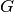
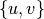
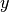
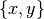
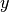
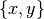
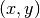
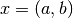
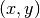
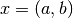

line_graph¶
-
line_graph(G, create_using=None)[source]¶ Returns the line graph of the graph or digraph
G.The line graph of a graph
Ghas a node for each edge inGand an edge joining those nodes if the two edges inGshare a common node. For directed graphs, nodes are adjacent exactly when the edges they represent form a directed path of length two.The nodes of the line graph are 2-tuples of nodes in the original graph (or 3-tuples for multigraphs, with the key of the edge as the third element).
For information about self-loops and more discussion, see the Notes section below.
Parameters: G (graph) – A NetworkX Graph, DiGraph, MultiGraph, or MultiDigraph. Returns: L – The line graph of G. Return type: graph Examples
>>> import networkx as nx >>> G = nx.star_graph(3) >>> L = nx.line_graph(G) >>> print(sorted(map(sorted, L.edges()))) # makes a 3-clique, K3 [[(0, 1), (0, 2)], [(0, 1), (0, 3)], [(0, 2), (0, 3)]]
Notes
Graph, node, and edge data are not propagated to the new graph. For undirected graphs, the nodes in G must be sortable, otherwise the constructed line graph may not be correct.
Self-loops in undirected graphs
For an undirected graph  without multiple edges, each edge can be written as a set . Its line graph
 has the edges of as
its nodes. If
has the edges of as
its nodes. If  and  are two nodes in , then  is an edge
in if and only if the intersection of and is nonempty. Thus,
the set of all edges is determined by the set of all pairwise intersections
of edges in .
and  are two nodes in , then  is an edge
in if and only if the intersection of and is nonempty. Thus,
the set of all edges is determined by the set of all pairwise intersections
of edges in .Trivially, every edge in G would have a nonzero intersection with itself, and so every node in
should have a self-loop. This is not so
interesting, and the original context of line graphs was with simple
graphs, which had no self-loops or multiple edges. The line graph was also
meant to be a simple graph and thus, self-loops in are not part of the
standard definition of a line graph. In a pairwise intersection matrix,
this is analogous to excluding the diagonal entries from the line graph
definition.Self-loops and multiple edges in add nodes to
in a natural way, and
do not require any fundamental changes to the definition. It might be
argued that the self-loops we excluded before should now be included.
However, the self-loops are still “trivial” in some sense and thus, are
usually excluded.Self-loops in directed graphs
For a directed graph without multiple edges, each edge can be written as a tuple
 . Its line graph has the edges of as its
nodes. If and are two nodes in , then  is an edge in
if and only if the tail of matches the head of , for example, if  and
. Its line graph has the edges of as its
nodes. If and are two nodes in , then  is an edge in
if and only if the tail of matches the head of , for example, if  and  for some vertices
for some vertices  ,
,  , and
, and  in .
in .Due to the directed nature of the edges, it is no longer the case that every edge in should have a self-loop in
. Now, the only time
self-loops arise is if a node in itself has a self-loop. So such
self-loops are no longer “trivial” but instead, represent essential
features of the topology of . For this reason, the historical
development of line digraphs is such that self-loops are included. When the
graph has multiple edges, once again only superficial changes are
required to the definition.References
- Harary, Frank, and Norman, Robert Z., “Some properties of line digraphs”, Rend. Circ. Mat. Palermo, II. Ser. 9 (1960), 161–168.
- Hemminger, R. L.; Beineke, L. W. (1978), “Line graphs and line digraphs”, in Beineke, L. W.; Wilson, R. J., Selected Topics in Graph Theory, Academic Press Inc., pp. 271–305.